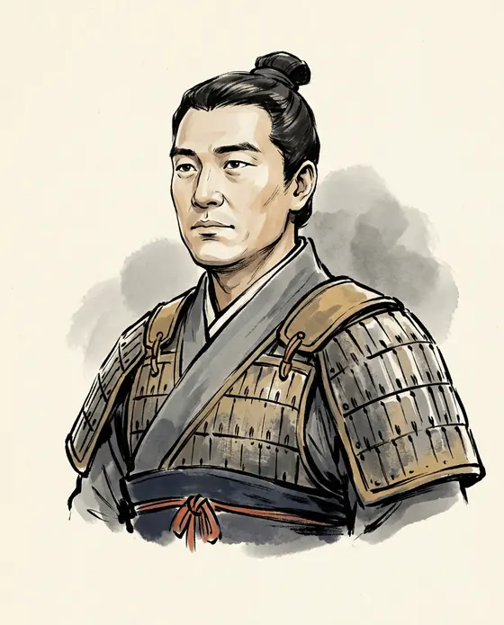

Wei Qing衛青
d. 118 BCE
A marquis's household servant who called himself a slave's son, and rose to General-in-Chief. Formed his waggons into a ring, fought the Chanyu in a sandstorm, and never again received an increase of his fief.